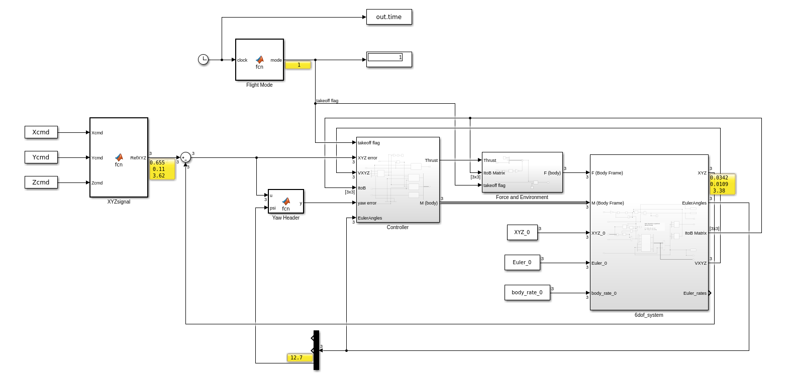

(NEW MODE) 6-Dof Quadcoptor Simulation and Control
Introduction
Instead of "following or surrounding" a moving target, this NEW MODE lets the drone to directly move in a specified path. I made this mode because of several reasons.
- Some viewers ask me if the drone can fly in circular path, or curve.
- I read a paper about Improved Fast Marching Method from my viewer, which focuses on finding the optimized path, so I think this NEW MODE can help a lot.
In additon, considering the purpose of flying along a specified path, the camera axis (blue axis) should be better to point along the direction it is moving forward, so that it can sense obstacles. This is done by the Yaw Header function.
In general, the drone can fly in any path. Try it!
Demo

The drone can now fly along any specificed path. The camera axis (blue axis) will face toward the direction it is moving.
Steps to Run this Project
- Set the initial values of the drone by running the script SetDroneControl_copt.m

- There are 2 ways to specify your path:
- Specify by writing the equations of the path. Open GenerateA.m script, run the default path or write down your equations of path.


- If you have a complicated path that cannot be written by equations, load your (x,y,z) data points extracted from your complicated path into A matrix. Make sure you use enough data points to fit the complex path.
- Specify by writing the equations of the path. Open GenerateA.m script, run the default path or write down your equations of path.
- Run the XYZsiganl_pathpts.m script to generate the Command signal, it will need the A matrix as input.

- Open the New Simulink Model: DroneControl_Direct.slx and run it.
 - Open the New animation script: animation_direct.m and run it to see the result.

MATLAB Project Download Link
You can download the full project by:
DroneControl_Path.zip
(please email me to get the unzip password. Thanks!)